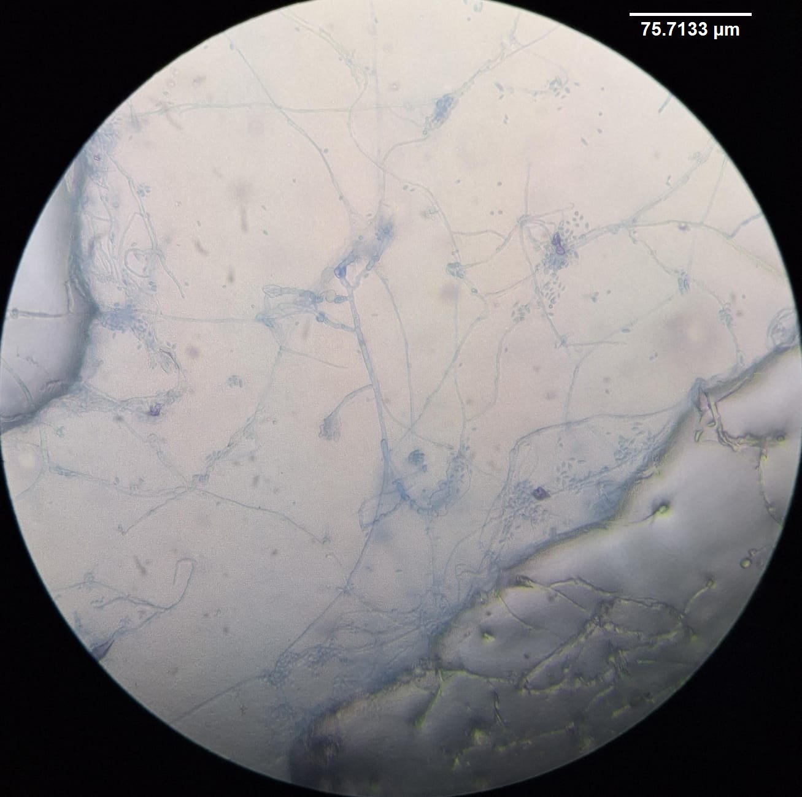
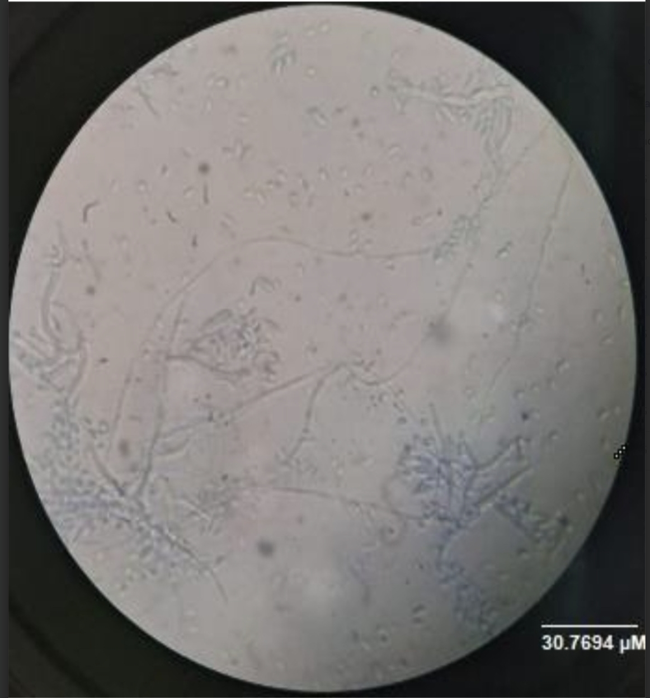
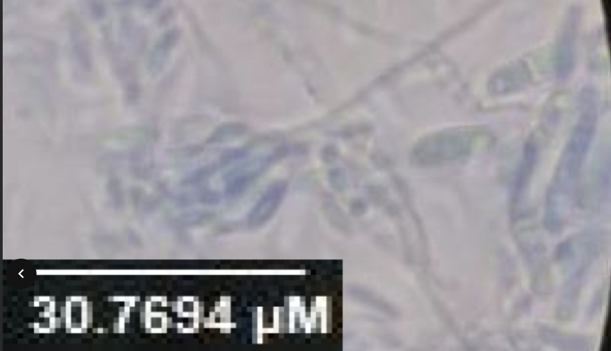

Respecto a las características microscópicas, la cepa fue aislada del cepario del Laboratorio de Microbiología del Centro Universitario UTEG, con origen desconocido. La muestra fue preparada mediante técnica de impronta con cinta adhesiva (Diurex) y montada en azul de lactofenol, siendo observada a aumentos de 40X y 100X.
Las hifas presentaron un diámetro de 1.76 ± 0.2 µm, con ramificaciones que formaban un ángulo aproximado de 66.17 ± 11.01° y una longitud de ramificación de 13.48 ± 1.96 µm. Se describieron como de forma filamentosa, sin ornamentación observable y de tipo cenocítico.
Los conidios o esporas mostraron una longitud de 2.46 ± 0.37 µm y un ancho de 0.26 ± 0.21 µm, con una relación de aspecto ovalada. No se registró diámetro globoso. En cuanto a los conidióforos, se observaron con superficie lisa, longitud de 12.28 ± 3.42 µm y un diámetro basal de 1.67 ± 0.39 µm; no se reportaron datos de espesor ni diámetro apical.
No se observaron estructuras correspondientes a zigomicetos (esporangios o esporangióforos) ni a ascomicetos (ascos o ascosporas). Sin embargo, se reportaron estructuras compatibles con basidiomicetos, donde las basidiosporas presentaron una longitud aproximada de 2.46 ± 0.37 µm y un ancho cercano a 4.12 ± 0.41 µm, aunque algunos datos mostraron variabilidad en las mediciones.
Como observaciones adicionales, no se identificaron septos en las hifas ni se pudo determinar el número de septos por campo. Tampoco se detectaron estructuras reproductivas accesorias como picnidios, cleistotecios o peritecios.